Overview
- In this assignment, we implemented de Casteljau’s algorithm to evaluate Bezier curves in 1- and 2-dimensional environments. Then, we were able to implement the
HalfEdgedata structure covered in lecture to be able to create triangle meshes. Finally, to round it all up, we implemented loop subdivision for higher sampling, allowing us to see a higher resolution rendering of our drawing. - While we learned the concepts like de Casteljau at a conceptual level during class, we found it interesting to implement it in a practical assignment. We also found interesting the fact that we had to be precise with certain data structures to represent data, like using
Vector2DorVector3Din certain instances.
Section I: Bezier Curves and Surfaces
Part 1: Bezier Curves with 1D de Casteljau Subdivision
Briefly explain de Casteljau's algorithm and how you implemented it in order to evaluate Bezier curves.
- At a high level, de Casteljau’s algorithm allows us to evaluate points on a Bezier curve more efficiently. We define the curve through a set of control points, and we recursively subdivide until we reach a single point that lies on the Bezier curve. Here’s a rundown of how we implemented it:
- First, as the recursive base case, we check if the number of points in the input vector equals 1. If it does, we’ve hit the base case, are on the curve, and can return.
- Otherwise, we iterate over the points on the input list of points. For each point, we use linear approximation to go between the current point i in the list and point
i + 1, generating a list of sizes - 1given an input list of sizes. - We return the list of size
s - 1. That moves us one step in the algorithm, and you continue until we hit the initially defined base case.
Take a look at the provided .bzc files and create your own Bezier curve with 6 control points of your choosing. Use this Bezier curve for your screenshots below.
Show screenshots of each step / level of the evaluation from the original control points down to the final evaluated point. Press E to step through. Toggle C to show the completed Bezier curve as well.
|
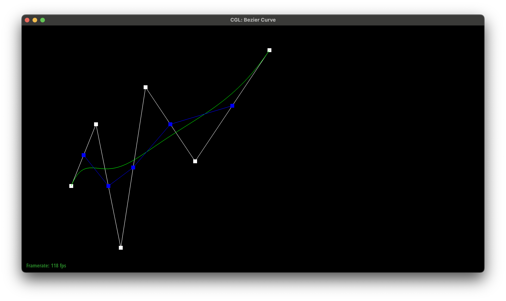
|
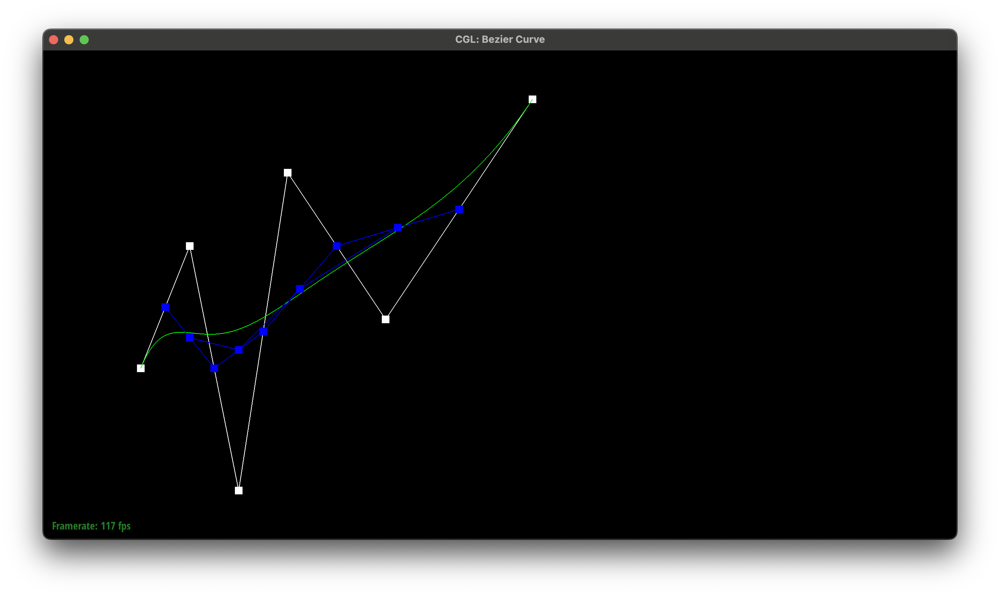
|
|
|
|
|
|
Show a screenshot of a slightly different Bezier curve by moving the original control points around and modifying the parameter \(t\) via mouse scrolling.
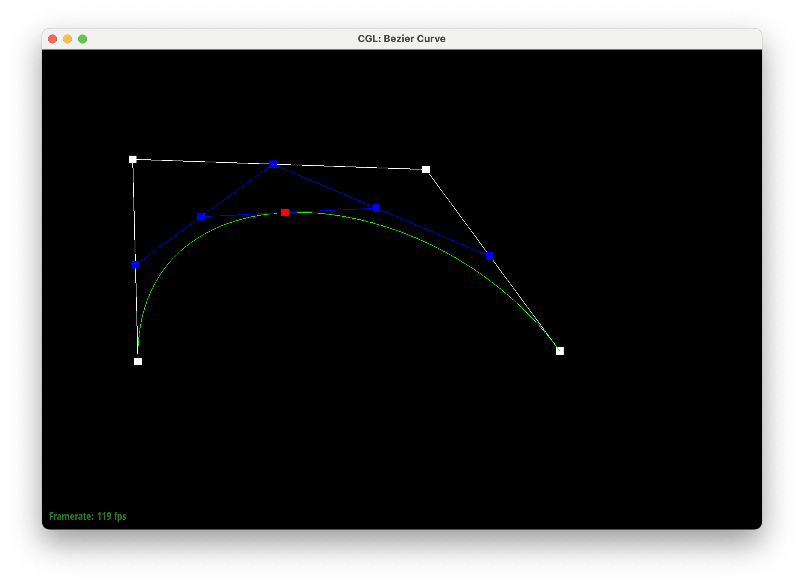
Part 2: Bezier Surfaces with Separable 1D de Casteljau
Briefly explain how de Casteljau algorithm extends to Bezier surfaces and how you implemented it in order to evaluate Bezier surfaces.
- We can simply extend the algorithm to evaluate the points on surfaces. The functionality is identical, just extended to a 2-dimensional plane. More details about the algorithm, alongside our implementation go as follows:
- Similar to Part 1, we check if the # of rows and columns equals 1. If it does, we return this single point which represents the point intersecting the Bezier surface.
- Otherwise, we iterate over the rows and columns individually. The iteration is implemented identically to Part 1; the main key difference is that we use a Vector3D instead of a Vector2D. This low level implementation is the evaluate1D function, which represents us evaluating one dimension of points, be it the x- or y-axis.
- For the actual evaluation itself, we iterate over (u, v), creating a list of points evaluating the points along u. Then, we take that entire list of points evaluated along u, and evaluate that along v.
Show a screenshot of bez/teapot.bez (not .dae) evaluated by your implementation.
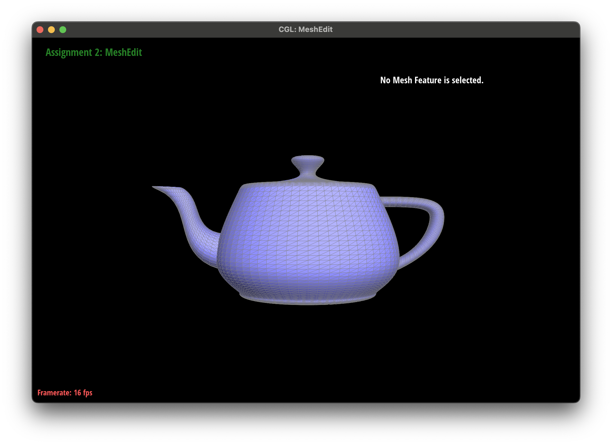
Section II: Triangle Meshes and Half-Edge Data Structure
Part 3: Area-Weighted Vertex Normals
Briefly explain how you implemented the area-weighted vertex normals.
- To calculate area-weighted vertex normals, we did:
- Initialization: A vector was initialized to zero to accumulate the normals of adjacent faces
- Traversal: Utilizing the half-edge data structure, a traversal was performed around the vertex to access each neighboring triangle.
- Accumulation: The normal of each triangle, reflecting its area due to the cross product calculation, was added to the accumulator vector.
- Normalization: The accumulated vector, representing the sum of the area-weighted normals, was normalized to yield a unit normal vector.
Show screenshots of dae/teapot.dae (not .bez) comparing teapot shading with and without vertex normals. Use Q to toggle default flat shading and Phong shading.
|
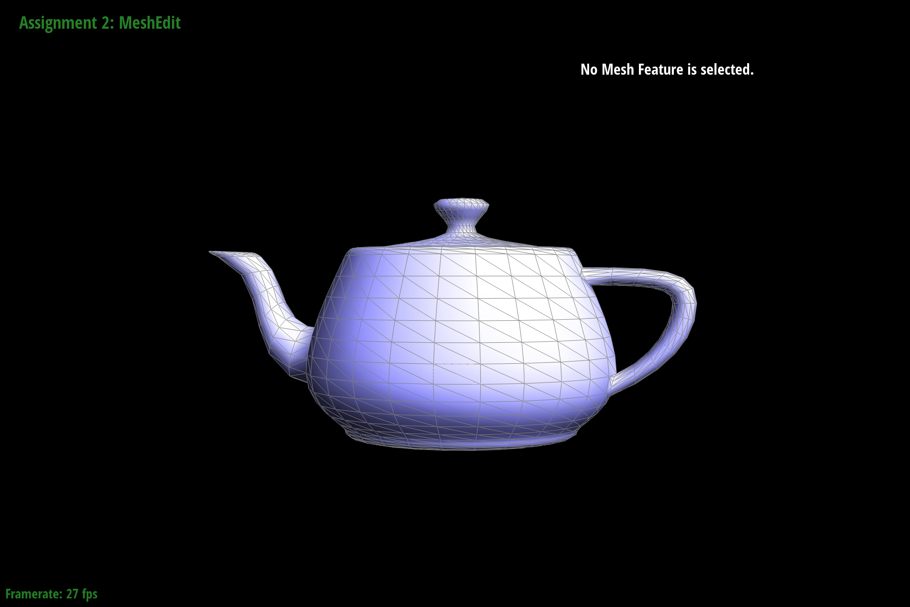
|
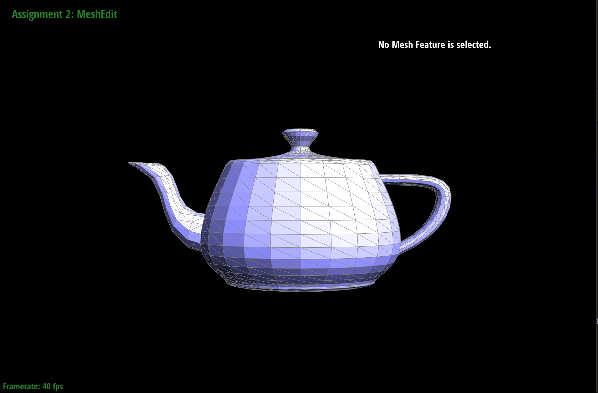
|
Part 4: Edge Flip
Briefly explain how you implemented the edge flip operation and describe any interesting implementation / debugging tricks you have used.
- Implementation Overview:
- Boundary Check: Initial validation to ensure the edge isn't on the mesh boundary, as boundary edges cannot be flipped.
- Element Identification: Gathering all directly involved elements (half-edges, vertices, faces) around the edge.
- Reassignment of Connections: Updating the next, vertex, and face pointers for each involved half-edge to reflect the new topology post-flip.
- Updating References: Adjusting the half-edge references for affected vertices and faces to point to valid half-edges after the topology change.
Show screenshots of the teapot before and after some edge flips.
|
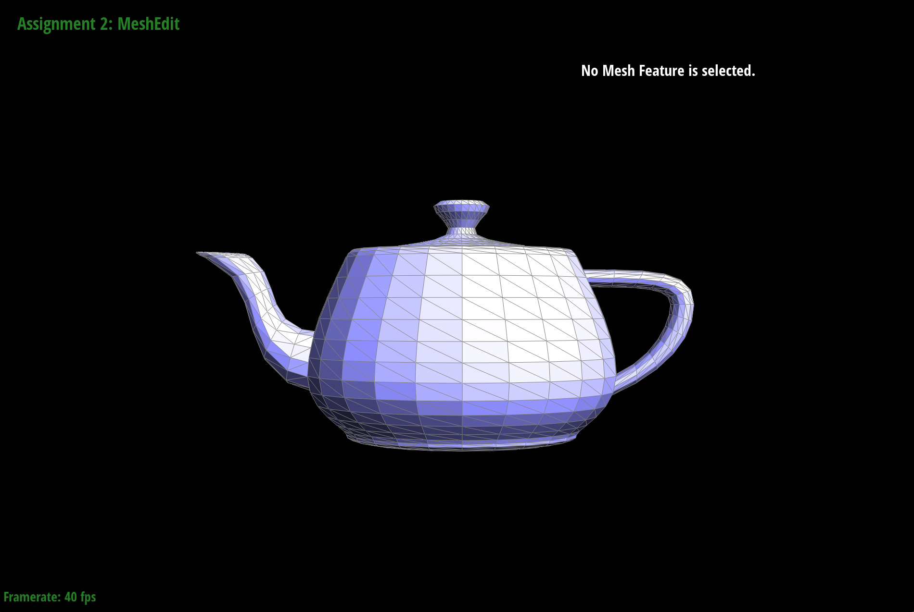
|
|
|
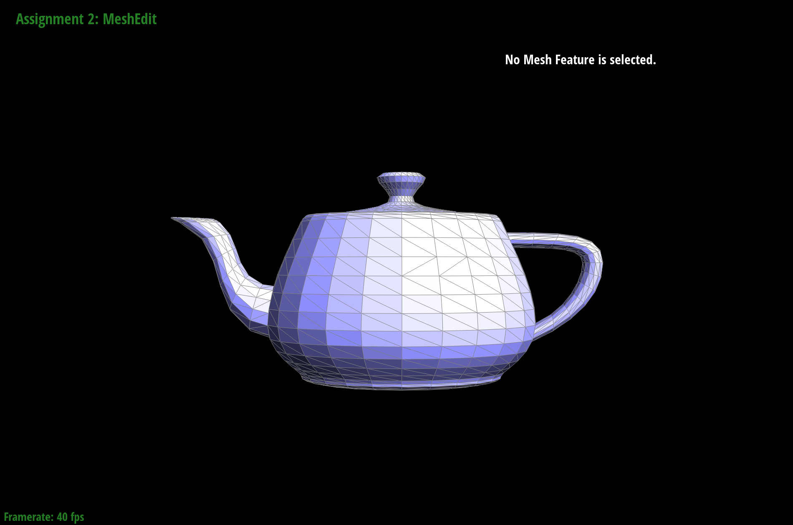
|
|
Write about your eventful debugging journey, if you have experienced one.
- Debugging Overview:
- An annoying problem we encountered was the creation of holes in the mesh when flipping an edge twice. Our first implementation to fix this bug ended up creating a hole when the edge is first flipped. We fixed this by emphasizing consistent updates of twin and next pointers for all affected half-edges and ensured reversibility of the flip operation to maintain mesh integrity.
- As I was writing this writeup, I noticed a new bug I hadn’t seen earlier where an adjacent edge would be removed during a flip. I fixed this by making sure all neighboring edges were accounted for.
Part 5: Edge Split
Briefly explain how you implemented the edge split operation and describe any interesting implementation / debugging tricks you have used.
- The edge split operation in a half-edge mesh was implemented with updates to the mesh's topology, ensuring the creation of a new vertex doesn't compromise the mesh's integrity. The operation's complexity escalates when considering boundary edges, necessitating a nuanced approach to maintain the manifold property of the mesh
- Implementation Overview:
- Boundary Check: Initially, verify if the edge is a boundary edge and return immediately if it is, to simplify the operation.
- Create New Vertex: Calculate the midpoint of the selected edge and create a new vertex at this location.
- Generate New Mesh Elements: Create the necessary additional edges and half-edges to accommodate the split edge. Add new faces if the edge is internal, adjusting the mesh topology around the new vertex.
- Update Connectivity: Carefully update the next, twin, vertex, edge, and face pointers for both existing and newly created half-edges. Ensure all vertices, including the new vertex, correctly reference their outgoing half-edges, and newly created edges are properly linked to their corresponding half-edges.
Show screenshots of a mesh before and after some edge splits.

|
|
|
|
Show screenshots of a mesh before and after a combination of both edge splits and edge flips.
Write about your eventful debugging journey, if you have experienced one.
- Debugging Overview:
- We ran into a problem with the splitting with flipping. We spent a lot of time trying to figure out why it wasn’t working, even rewriting the code a few times. Turns out it wasn’t a problem with the splitting function but rather the flipping and our splitting function was near correct the first time we wrote it.
If you have implemented support for boundary edges, show screenshots of your implementation properly handling split operations on boundary edges.
n/a
Part 6: Loop Subdivision for Mesh Upsampling
Brifly explain how you implemented the loop subdivision and describe any interesting implementation / debugging tricks you have used.
- Implementation Details:
- Updating the Vertex Positions: We use the Loop subdivision rule defined in class and iterate over the points within the input mesh making each vertex’s new position based on its own position as well as the position of its neighbors. We compute the new position and store it in the newPosition attribute of the edge.
- Splitting Edges: We simply slit each edge—the order doesn’t matter—and note whether the edge is newly made or already existed before the split. We make use of the
isNewattribute to make sure we don’t infinitely divide the edges we iterate over. - Edge Flipping: Next, we iterate over all of the edges and flip those connecting a new and old vertex, as defined from the previous part.
- Copying Position: Finally, we move the position of each Vertex from
newPositionto position iteratively, and setisNewto false for all edges.
- Debugging Overview:
- We encountered some difficulty debugging the problem because, first, the shape wasn’t properly subdividing and just shrunk when we hit
L. We realized the issue was that we did not properly update mesh values and instead just stored the new mesh in a separate vector. Additionally, once we resolved that issue, the program seemed to get caught in an infinite loop in the splitting portion of the function. - We would like to credit ChatGPT for aid in debugging because we realized that there was some issues with the order for edges set out in #5, and through GPT we realized that we mislabeled some of the edges in #5 not new. Funnily enough, we realized we made the same mistake when debugging #5 as this problem.
- We encountered some difficulty debugging the problem because, first, the shape wasn’t properly subdividing and just shrunk when we hit
Take some notes, as well as some screenshots, of your observations on how meshes behave after loop subdivision. What happens to sharp corners and edges? Can you reduce this effect by pre-splitting some edges?
Sharp edges seem to be rather smoothened out; as we upsample, the cube gets softer corners. It happens more aggressively on the first iterations and the smoothing reduces in later iterations. The equal nature of edge splitting is harsher to sharper edges, which explains why the smoothing is less extreme further down the line. Thus, pre-splitting harsher edges and then performing upsampling would allow us to better preserve the shape of the object.
Load dae/cube.dae. Perform several iterations of loop subdivision on the cube. Notice that the cube becomes slightly asymmetric after repeated subdivisions. Can you pre-process the cube with edge flips and splits so that the cube subdivides symmetrically? Document these effects and explain why they occur. Also explain how your pre-processing helps alleviate the effects.
Like mentioned in the previous part of this question's write-up, the edges are treated harsher than other portions, which results in the mentioned asymmetry. Yes, we could process and more intensely initially divide the edges of the cube to avoid this aggressive smoothening. We can see these effects in the gradual renderings of the image as we further upsample.
| 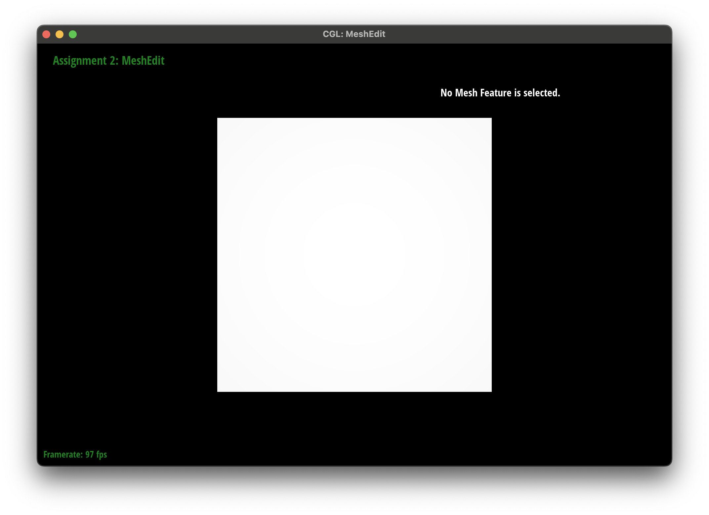 | 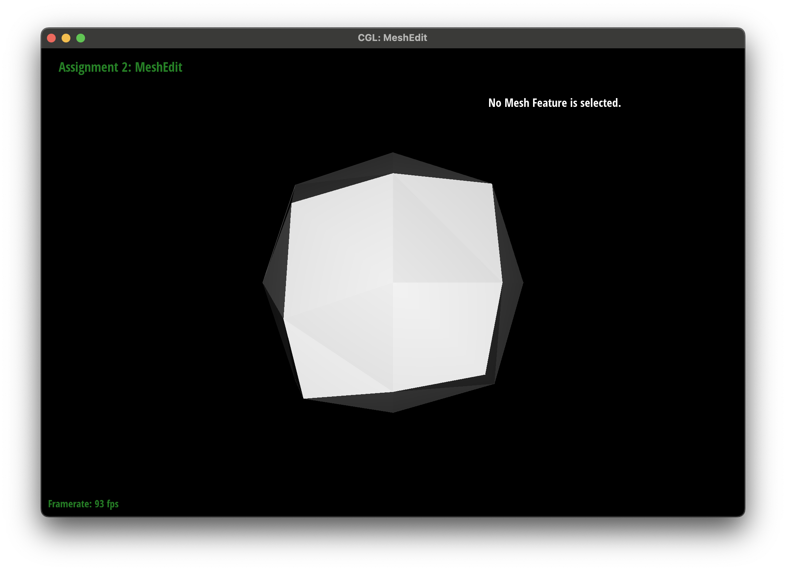 |
| 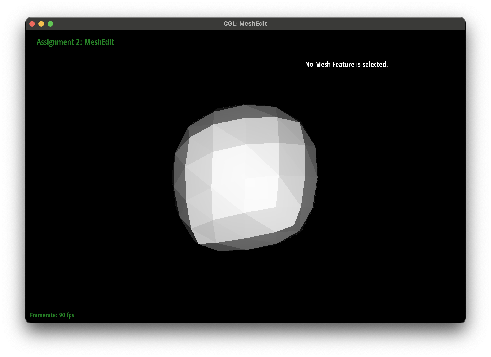 | 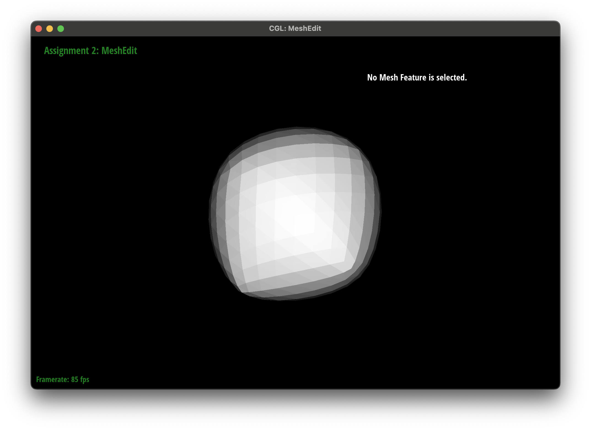 |
If you have implemented any extra credit extensions, explain what you did and document how they work with screenshots.
YOUR RESPONSE GOES HERE
Part 7 (Optional, Possible Extra Credit)
Save your best polygon mesh as partsevenmodel.dae in your docs folder and show us a screenshot of the mesh in your write-up.YOUR RESPONSE GOES HERE
Include a series of screenshots showing your original mesh and your mesh after one and two rounds of subdivision. If you have used custom shaders, include screenshots of your mesh with those shaders applied as well.
YOUR RESPONSE GOES HERE
Describe what you have done to enhance your mesh beyond the simple humanoid mesh described in the tutorial.
YOUR RESPONSE GOES HERE